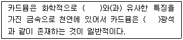
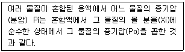
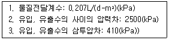
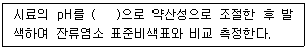
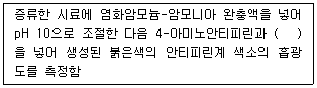
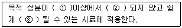
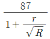
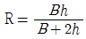
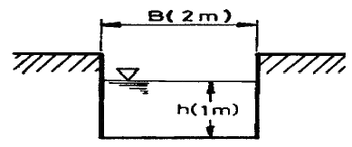
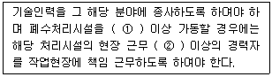

수질환경산업기사 (2012-05-20 기출문제)
1과목: 수질오염개론
1. 어느 하천 주변에 돼지를 사육하려고 한다. 하천의 유량은 100,000m3/day이며 BOD는 1.5mg/이다. 이 하천의 수질을 BOD 4.5mg/로 보호하면서 돼지는 최대 몇 마리까지 사육할 수 있는가? (단, 돼지 한 마리 당 2kg BOD/day을 발생시키며 발생폐수량은 무시함)
- 50 마리
- 100 마리
- 150 마리
- 200 마리
(정답률: 84%)

2. 소수성 콜로이드에 관한 설명으로 옳지 않는 것은?
- Suspension 상태이다.
- 염에 매우 민감하다.
- 물과 반발하는 성질을 가지고 있다.
- 틴달효과가 약하거나 거의 없다.
(정답률: 82%)
3. pH = 6.0인 용액의 산도의 8배를 가진 용액의 pH는?
- 5.1
- 5.3
- 5.4
- 5.6
(정답률: 62%)
4. 해수의 온도와 염분의 농도에 의한 밀도차에 의해 형성되는 해류는?
- 조류
- 쓰나미
- 상승류
- 심해류
(정답률: 69%)
5. 물의 특성으로 옳지 않는 것은?
- 물의 표면장력은 온도가 상승할수록 감소한다.
- 물의 4℃에서 밀도가 가장 크다.
- 물의 여러 가지 특성은 물의 수소결합 때문에 나타난다.
- 융해열과 기화열이 작아 생명체의 열적안정을 유지할 수 있다.
(정답률: 84%)
6. 다음은 카드뮴에 관한 설명이다. ( )안에 옳은 내용은?

- 아연
- 망간
- 주석
- 마그네슘
(정답률: 65%)
7. 어떤 공장에서 phenol 500kg이 매일 폐수에 섞여 배출된다. 1g의 phenol이 1.7g의 BOD5에 해당된다고 할 때, 인구당량은? (단, 1인 1일당 BOD5는 50g기준)
- 15,000 명
- 16,000 명
- 17,000 명
- 18,000 명
(정답률: 43%)
8. 미생물 세포를 C5H7O2N 이라고 하면 세포 5kg당의 이론적인 공기소모량은? (단, 완전산화 기준이며 분해 최종산물은 CO2, H2O, NH3, 공기 중 산소는 23%(W/W)로 가정한다.)
- 약 27kg air
- 약 31kg air
- 약 42kg air
- 약 48kg air
(정답률: 82%)
9. 해양으로 유출된 유류를 제어하는 방법과 가장 거리가 먼 것은?
- 계면활성제를 살포하여 기름을 분산시키는 것
- 인공 포기로 기름 입자를 증산시키는 것
- 오일펜스를 띄워 기름은 확산을 차단하는 것
- 미생물을 이용하여 기름을 생화학적으로 분해하는 것
(정답률: 56%)
10. 수(水)중의 DO 농도 증감의 요인인 산소 용해율에 관한 내용으로 옳지 않은 것은?
- 압력이 높을수록 산소용해율이 높다.
- 물의 흐름이 난류일 때 산소용해율이 높다.
- 염(분)의 농도가 높을수록 산소용해율은 감소한다.
- 수온이 낮을수록 산소용해율은 감소한다.
(정답률: 78%)
11. 최종 BOD(BODu)가 500mg/L이고, 소모 BOD5가 400mg/L일 떄 탈산소 계수(base=상용대수)는?
- 0.12/day
- 0.14/day
- 0.16/day
- 0.18/day
(정답률: 69%)
12. BOD 400mg/를 함유한 공장폐수 400m3/day를 처리하여 하천에 방류하고 있다. 유량이 20,000m3/day이고 BOD 2mg/인 하천에 방류한 후 곧 완전 혼합된 때의 BOD농도가 3mg/이라면 이 공장폐수의 BOD제거율은 몇 %인가? (단, 하천의 다른 오염물질 유입은 없다고 가정함)
- 82.3
- 84.6
- 86.8
- 89.6
(정답률: 62%)
13. 어떤 오염물질의 반응 초기 농도가 200mg/L에서 2시간 후에 40mg/L로 감소 되었다. 이 반응이 1차 반응이라고 한다면 4시간 후 오염물질의 농도(mg/L)는?
- 6
- 8
- 10
- 12
(정답률: 83%)
14. 페놀(C6H5OH) 100mg/L의 이론적인 COD(mg/L)는?
- 약 240
- 약 280
- 약 320
- 약 360
(정답률: 66%)
15. 호소의 성층현상에 관한 설명으로 옳지 않는 것은?
- 호소의 정체층이 수심에 따라 3개의 층, 즉 표층부, 변환부, 심층부로 분리되는 현상이 성층현상이다.
- 겨울이 여름보다 수심에 따른 수온차가 더 커져 호소는 더욱 안정된 성층현상이 일어난다.
- 수표면의 온도가 4℃인 이른 봄과 늦은 가을에 수직적으로 전도현상이 일어난다.
- 계절의 변화에 따라 수온차에 의한 밀도차로 수층이 형성된다.
(정답률: 78%)
16. 유량이 1.2m3/s, BOD5가 2.0mg/L, DO가 9.2mg/L인 하천에 유량 0.6m3/s, BOD5가 30mg/L, DO가 3.0mg/L인 하수가 유입되고 있다. 하천의 평균유수단면적은 8.1m2이면 하류 48km지점의 용존산소부족량은? (단, 수온은 20℃ [포화 DO 9.2mg/L], 혼합수의 K1=0.1/day, K2=0.2/day, 상용대수 기준)
- 4.7 mg/L
- 5.2 mg/L
- 5.6 mg/L
- 6.1 mg/L
(정답률: 44%)
17. 염기에 관한 내용으로 옳지 않는 것은?
- 염기 수용액은 미끈미끈하다.
- 전자쌍을 받는 화학종이다.
- 양성자를 받는 분자나 이온이다.
- 수용액에서 수산화이온을 내어놓는 것이다.
(정답률: 70%)
18. 해수의 특성에 대한 내용 중 옳지 않는 것은?
- 해수에서의 질소분포 형태는 NO2--N, NO3--N 형태로 65% 정도 존재한다.
- 해수의 pH는 8.2로 약알칼리성이다.
- 일출시 생물의 탄소동화작용으로 해수 표면의 CO2 농도가 급증한다.
- 해수의 밀도는 1.02~1.07g/cm3범위로서 수온, 염분수압의 함수이다.
(정답률: 63%)
19. 다음이 설명하는 법칙은?

- Henry's law
- Dalton's law
- Graham's law
- Raoult's law
(정답률: 65%)
20. 25℃, AgCl의 물에 대한 용해도가 1.0×10-4M이라면 AgCl에 대한 Ksp(용해도적)는?
- 1.0 × 10-6
- 2.0 × 10-6
- 1.0 × 10-8
- 2.0 × 10-8
(정답률: 62%)
2과목: 수질오염방지기술
21. 활성슬러지 폭기조의 F/M비를 0.4kg BOD/kg MLSSㆍday로 유지하고자 한다. 운전조건이 다음과 같을 때 MLSS의 농도(mg/L)는? (단, 운전조건 : 폭기조 용량 100m3, 유량 1000m3/day, 유입 BOD 100mg/L)
- 1500
- 2000
- 2500
- 3000
(정답률: 75%)
22. 생물학적 인 제거 공정에 관한 설명으로 옳지 않은 것은?
- Acinetobacter는 인제거를 위한 중요한 미생물의 하나이다.
- 5단계 Bardenpho 공정에서 인은 폐슬러지에 포함되어 제거된다.
- Phostrip 공정은 인 성분을 Main-Stream에서 제거하는 공정이다.
- A2/O공정은 질소와 인 성분을 함께 제거할 수 있다.
(정답률: 59%)
23. 상수 원수 내의 비소 처리에 관한 설명으로 옳지 않는 것은?
- 응집처리에는 응집침전에 의한 제거방법과 응집여과에 의한 제거방법이 있다.
- 이산화망간을 사용하는 흡착처리에는 5가비소를 제거 할 수 있다.
- 흡착시의 pH는 활성알루미나에서 3~4이 효과적인 범위이다.
- 수산화세륨을 흡착제로 사용하는 경우는 3가 및 5가 비소를 흡착할 수 있다.
(정답률: 68%)
24. BOD 200mg/L인 하수를 1차 및 2차 처리하여 최종 유출수의 BOD농도를 20mg/L 으로 하고자 한다. 1차 처리에서 BOD제거율이 40%일 때 2차 처리에서의 BOD 제거율은?
- 81.3%
- 83.3%
- 86.3%
- 89.3%
(정답률: 78%)
25. 생물막법인 접촉 산화법의 장단점으로 옳지 않는 것은?
- 난분해성물질 및 유해물질에 대한 내성이 높다.
- 슬러지 반송이 필요 없고 슬러지 발생량이 적다.
- 미생물량과 영향인자를 정상상태로 유지하기 위한 조작이 용이하다.
- 분해속도가 낮은 기질 제거에 효과적이다.
(정답률: 50%)
26. 폐수량 1000m3/일, BOD 2000mg/에서 BOD부하량을 400kg/day까지 감소시키려고 한다면 BOD제거율은 얼마여야 하는가?
- 75%
- 80%
- 85%
- 90%
(정답률: 48%)
27. 포기조내의 MLSS가 3,000mg/ℓ, 포기조 용적이 2,000m3인 활성슬러지법에서 최종침전지에 유출되는 SS는 무시하고 매일 100m3의 폐슬러지를 뽑아서 소화조로 보내 처리한다. 폐슬러지의 농도가 1%라면 세포의 평균체류시간(SRT)는?
- 120시간
- 144시간
- 192시간
- 240시간
(정답률: 65%)
28. 하수 소독을 위한 오존의 장단점으로 옳은 것은?
- Virus의 불활성화 효과가 크다.
- 전력비용이 적게 소요된다.
- 효과에 지속성이 있다.
- 탈취, 탈색효과가 적다.
(정답률: 62%)
29. 연속 회분식 반응조(SBR)의 운전단계(주입, 반응, 침전, 제거, 휴지)별 개요에 관한 설명으로 옳지 않은 것은?
- 주입 : 주입과정에서 반응조의 수위는 25% 용량(휴지 기간 끝에 용량)에서 100%까지 상승된다.
- 반응 : 주입단계에서 시작된 반응을 완결시키며 전형적으로 총 cycle시간의 35% 정도를 차지한다.
- 침전 : 연속 흐름식 공정에 비하여 일반적으로 더 효율적이다.
- 제거 : 침전슬러지를 반응조로부터 제거하는 것으로 총 cycle시간의 5~30% 정도이다.
(정답률: 53%)
30. 역삼투법으로 하루에 300m3의 3차 처리 유출수를 탈염하기 위해 소요되는 막의 면적은?

- 324m2
- 438m2
- 541m2
- 694m2
(정답률: 53%)
31. 살수여상에서 연못화(Ponding)의 원인과 가장 거리가 먼 것은?
- 기질(基質)부하율이 너무 낮다.
- 생물막이 과도하게 탈리되었다.
- 1차 침전지에서 고형물이 충분히 제거되지 않았다.
- 여재가 너무 작거나 균일하지 않다.
(정답률: 72%)
32. 잉여 슬러지량이 15m3/day이고, 폭기조 부피가 300m3 [폭기조 MLSS농도(X)/반송슬러지농도(Xr)]=0.3일때, MCRT(평균미생물 체류시간)는? (단, 최종유출수의 SS농도 고려하지 않음)
- 4 day
- 6 day
- 8 day
- 10 day
(정답률: 73%)
33. 폐수의 성질이 BOD 1000 mg/ℓ, SS 1500 mg/ℓ, pH 3.5, 질소분 55mg/ℓ, 인산 분 12mg/ℓ인 폐수가 있다. 이 폐수의 처리 순서로 타당한 것은?
- Screening → 중화 → 미생물처리 → 침전
- Screening → 침전 → 미생물처리 → 중화
- 침전 → Screening → 미생물처리 → 중화
- 미생물처리 → Screening → 중화 → 침전
(정답률: 64%)
34. 어느 공장 폐수의 BOD가 67000 ppb일 때 유출수량은 1600m3/day이다. 이 시설의 1일 BOD 부하량(kg/day)은?
- 107.2 kg/day
- 207.3 kg/day
- 314.2 kg/day
- 456.2 kg/day
(정답률: 63%)
35. 부상조의 최적 A/S비는 0.08, 처리할 폐수의 부유물질 농도는 375mg/L, 20℃에서 5.1 atm으로 가압할 때 반송률(%)은? (단, f=0.8, 공기용해도 as=18.7mL/L, 20℃기준, 순환방식 기준)
- 약 25
- 약 30
- 약 35
- 약 40
(정답률: 50%)
36. 고도수처리에 이용되는 분리방법 중 투석의 구동력으로 옳은 것은?
- 정수압차(0.1~1Bar)
- 정수압차(20~100Bar)
- 전위차
- 농도차
(정답률: 68%)
37. 하수고도처리 방법 중 질소제거를 위한 막분리활성 슬러지법(MBR공법)의 장단점 및 설계, 유지관리상 유의점으로 옳지 않는 것은?
- 생물학적 공정에서 문제시 되고 있는 이차침전지의 침강성과 관련된 문제가 없다.
- 긴 SRT로 인하여 슬러지 발생량이 적다.
- SS제거를 위해 응집조를 두어 분리막을 보호하고 수명을 연장한다.
- 완벽한 고액분리가 가능하며 높은 MLSS 유지가 가능하다.
(정답률: 45%)
38. 회전생물막접촉기(RBC)에 관한 설명으로 옳지 않는 것은?
- 슬러지 반송량 조절이 용이하다.
- 활성슬러지법에 비해 슬러지 생산량이 적다.
- 질소, 인 등의 영양염류의 제거가 가능하다.
- 동력비가 적게 든다.
(정답률: 50%)
39. 슬러지의 함수율 90%, 슬러지의 고형물량중 유기물 함량 70%이다. 투입량은 100k이며 소화로 유기물의 5/7가 제거된다. 소화된 후의 슬러지 양은? (단, 소화슬러지의 함수율은 85%, %는 부피기준이며, 소형물의 비중은 1.0으로 가정한다.)
- 33.3m3
- 42.2m3
- 45.6m3
- 51.4m3
(정답률: 46%)
40. 직경이 0.5mm이고 비중이 2.65인 구형입자가 20℃ 물에서 침강할 때 침강속도(m/sec)는? (단, 20℃에서 pw=998.2kg/m3이며, μ=1.002 × 10-3kg/mㆍsec, Stokes 법칙적용)
- 0.08
- 0.14
- 0.22
- 0.32
(정답률: 68%)
3과목: 수질오염공정시험방법
41. 시료를 채취할 때 유의하여야 할 사항으로 옳지 않은 것은?
- 휘발성유기화합물 분석용 시료를 채취할 때에는 뚜껑의 격막을 만지지 않도록 주의 하여야 한다.
- 지하수 시료채취 시 심부층의 경우 저속양수펌프 등을 이용하여 반드시 저속시료채취하여 시료 교란을 최소화하여야 한다.
- 냄새 측정을 위한 시료채취시 냄새 없는 세제로 닦은 후 고무 또는 플라스틱 마개로 봉한다.
- 퍼클로레이트를 측정하기 위한 시료채취 시 시료용기를 질산 및 정제수로 씻은 후 사용하며 시료 채취시 시료병의 2/3를 채운다.
(정답률: 75%)
42. 냄새 측정시 냄새역치(TON)를 구하는 산식으로 옳은 것은? (단, A: 시료부피(mL), B: 무취 정제수 부피(mL) )
- 냄새역치 = (A + B) / A
- 냄새역치 = A / (A + B)
- 냄새역치 = (A + B) / B
- 냄새역치 = B / (A + B)
(정답률: 82%)
43. 시료의 최대보전기간이 나머지와 다른 측정대상 항목은?
- 총인(용존 총인)
- 퍼클로레이트
- 페놀류
- 유기인
(정답률: 65%)
44. 총칙 중 온도표시에 관한 내용으로 옳지 않는 것은?
- 냉수는 15℃ 이하를 말한다.
- 찬 곳은 따로 규정이 없는 한 4∼15℃의 곳을 뜻한다.
- 시험은 따로 규정이 없는 한 상온에서 조작하고 조작 직후에 그 결과를 관찰한다.
- 온수는 60∼70℃를 말한다.
(정답률: 75%)
45. 정량한계(LOQ)를 옳게 나타낸 것은?
- 정량한계 = 2 × 표준편차
- 정량한계 = 3.3 × 표준편차
- 정량한계 = 5 × 표준편차
- 정량한계 = 10 × 표준편차
(정답률: 65%)
46. 자동시료채취기의 시료채취 기준으로 옳은 것은? (단, 배출허용기준 적합여부 판정을 위한 시료채취-복수시료채취방법 기준)
- 2시간 이내에 30분 이상 간격으로 2회 이상 채취하여 일정량의 단일시료로 한다.
- 4시간 이내에 30분 이상 간격으로 2회 이상 채취하여 일정량의 단일시료로 한다.
- 6시간 이내에 30분 이상 간격으로 2회 이상 채취하여 일정량의 단일시료로 한다.
- 8시간 이내에 30분 이상 간격으로 2회 이상 채취하여 일정량의 단일시료로 한다.
(정답률: 66%)
47. 다음은 잔류염소-비색법 측정에 관한 내용이다. ( )안에 옳은 내용은?

- 인산염완충용액
- 프탈산염완충용액
- 붕산염완충용액
- 수산화칼륨완충용액
(정답률: 63%)
48. 다음은 페놀류를 자외선/가시선 분광법으로 측정하는 방법이다. ( )안에 옳은 내용은?

- 몰리브덴산 암모늄
- 아연분말
- 헥사시안화철(ll)산칼륨
- 과황산칼륨
(정답률: 48%)
49. 총대장균군(환경기준 적용시료) 실험을 위한 시료의 보존 방법 기준은?
- 4℃ 보관
- 저온(10℃ 이하)보관
- 냉암소에 4℃ 보관
- 황산구리 첨가 후 4℃ 냉암소 보관
(정답률: 50%)
50. 공장폐수 및 하수유량(측정용 수로 및 기타 유량측정 방법) 측정을 위한 웨어의 최대유속과 최소유속의 비로 옳은 것은?
- 100 : 1
- 200 : 1
- 400 : 1
- 500 : 1
(정답률: 75%)
51. 인산염의 정량을 위해 적용 가능한 시험방법과 가장 거리가 먼 것은? (단, 수질오염공정시험기준 기준)
- 자외선/가시선 분광법(이염화주석환원법)
- 자외선/가시선 분광법(아스코르빈산환원법)
- 이온크로마토그래피
- 이온전극법
(정답률: 58%)
52. 색도 측정에 관한 설명 중 옳지 않는 것은?
- 색도측정은 시각적으로 눈에 보이는 색상에 관계 없이 단순 색도차 또는 단일 색도차를 계산한다.
- 백금-코발트 표준물질과 아주 다른 색상의 폐하수에는 적용 할 수 없다.
- 근본적인 간섭은 적용 파장에서 콜로이드 물질 및 부유물질의 존재로 빛이 흡수 또는 분산되면서 일어난다.
- 아담스-니컬슨(Adams-Nickerson) 색도공식을 근거로 한다.
(정답률: 88%)
53. 개수로 측정 구간의 유수의 평균 단면적이 0.8m2이고, 표면 최대 유속이 2m/sec일 때 유량은? (단, 수로의 구성, 재질, 수로 단면의 형상, 구배 등이 일정치 않은 개수로의 경우)
- 53 m3/min
- 72 m3/min
- 84 m3/min
- 90 m3/min
(정답률: 64%)
54. 다음은 시료의 전처리 방법 중 '회화에 의한 분해'에 관한 내용이다. ( )안에 옳은 것은?

- ① 400℃, ② 휘산, ③ 회화
- ① 400℃, ② 회화, ③ 휘산
- ① 500℃, ② 휘산, ③ 회화
- ① 500℃, ② 회화, ③ 휘산
(정답률: 75%)
55. 측정하고자 하는 금속물질이 바륨인 경우의 시험 방법과 가장 거리가 먼 것은? (단, 수질오염공정시험기준)
- 자외선/가시선 분광법
- 유도결합플라스마 원자발광분광법
- 유도결합플라스마 질량분석법
- 불꽃 원자흡수분광광도법
(정답률: 74%)
56. 클로로필 a 측정시 클로로필 색소를 추출하는데 사용되는 용액은?
- 아세톤(1+9) 용액
- 아세톤(9+1) 용액
- 에틸알콜(1+9) 용액
- 에틸알콜(9+1) 용액
(정답률: 81%)
57. 시안(CN-)을 이온전극법으로 측정할 때 정량한계는?
- 0.01 mg/L
- 0.⑤ mg/L
- 0.10 mg/L
- 0.50 mg/L
(정답률: 59%)
58. 폐수 중의 알킬수은을 기체크로마토그래피로 정량할 때 사용되는 검출기와 운반기체를 맞게 짝지어진 것은?
- TCD, 헬륨
- FPD, 질소
- ECD, 헬륨
- FTD, 질소
(정답률: 71%)
59. 그림과 같은 개수로(수로의 구성재질과 수로 단면의 형상이 일정하고 수로의 길이가 적어도 10m까지 똑바른 경우)가 있다. 수심 1m, 수로폭 2m, 수면경사 1/1000인 수로의 평균 유속(C(Ri)0.5)을 케이지(Chezy)의 유속공식으로 계산하였을 때 유량은? (단, Bazin의 유속계수 C =

이며,
이고, r=0.46 이다.)
- 102 m3/min
- 122 m3/min
- 142 m3/min
- 162 m3/min
(정답률: 64%)
60. 실험 일반 총칙 중 용어정의에 관한 내용으로 옳지 않는 것은?
- 냄새가 없다: 냄새가 없거나 또는 거의 없는 것을 표시하는 것
- 정밀히 단다: 규정된 수치의 무게를 0.1mg까지 다는 것
- 정확히 단다: 규정한 양의 액체를 부피피펫으로 눈금까지 취하는 것
- 진공: 따로 규정이 없는 한 15mmHg 이하
(정답률: 62%)
4과목: 수질환경관계법규
61. 수질 및 수생태계 정책 심의 위원회의 위원장은?
- 대통령
- 국무총리
- 환경부장관
- 환경부차관
(정답률: 75%)
62. 과징금 부과기준에 대한 내용으로 옳지 않은 것은?
- 과징금의 납부기한은 과징금납부통지서의 발급일부터 30일로 한다.
- 과징금은 영업정지일수에 1일당 부과금액과 폐수처리업의 종류별 부과계수를 곱하여 산정한다.
- 영업정지 1일당 부과금액은 300만원으로 한다.
- 폐수처리업의 종류별 부과계수는 폐수수탁처리업 2.0, 폐수재이용업 1.2로 한다.
(정답률: 63%)
63. 환경기준 중 수질 및 수생태계(하천)의 생활환경기준으로 옳지 않은 것은? (단, 등급은 매우 좋음( I a))
- 수소이온농도(pH) : 6.3∼7.5
- T-P : 0.02 mg/L 이하
- SS : 25 mg/L 이하
- BOD : 1 mg/L 이하
(정답률: 42%)
64. 환경기술인 등에 교육에 관한 내용으로 옳지 않은 것은?
- 보수교육: 최초 교육 후 3년 마다 실시하는 교육
- 교육과정: 환경기술인 과정, 폐수처리기술요원과정
- 교육과정의 교육기간: 3일 이내
- 교육기관: 환경기술인은 환경보전협회, 기술요원은 국립환경인력개발원
(정답률: 83%)
65. 환경부장관은 비점오염저감계획을 검토하거나 비점오염저감시설을 설치하지 아니하여도 되는 사업장을 인정하려는 때에는 그 적정성에 관하여 환경부령이 정하는 관계전문기관의 의견을 들을 수 있다. 다음이 말하는 환경부령이 정하는 관계전문기관으로 옳은 것은?
- 국립환경과학원
- 한국환경정책ㆍ평가연구원
- 한국환경기술개발원
- 한국건설기술연구원
(정답률: 63%)
66. 환경부장관은 대권역별 수질 및 수생태계 보전을 위한 기본계획을 몇 년마다 수립하여야 하는가?
- 3년
- 5년
- 7년
- 10년
(정답률: 84%)
67. 1일 폐수배출량이 800m3인 사업장의 환경기술인의 자격 기준으로 옳은 것은?
- 수질환경기사 1명 이상
- 수질환경산업기사 1명 이상
- 수질환경산업기사, 환경기능사 또는 2년 이상 수질 분야 환경관련 업무에 직접 종사한 자 1명 이상
- 수질환경산업기사, 환경기능사 또는 3년 이상 수질 분야 환경관련 업무에 직접 종사한 자 1명 이상
(정답률: 65%)
68. 초과부과금의 산정기준인 수질오염물질 1킬로그램 당 부과금액이 가장 적은 것은?
- 수은 및 그 화합물
- 폴리염화비페닐
- 트리클로로에틸렌
- 카드뮴 및 그 화합물
(정답률: 63%)
69. 수질오염경보 중 조류경보(조류경보단계)시 취수장, 정수장 관리자의 조치사항 기준으로 옳지 않은 것은?
- 조류증식 수심 이하로 취수구 이동
- 취수구 방어막 설치 등 조류 제거 조치
- 정수의 독소분석 실시
- 정수처리 강화(활성탄처리, 오존처리)
(정답률: 82%)
70. 환경부장관은 비점오염저감계획의 이행 또는 시설의 설치, 개선을 명령할 경우에는 비점오염저감계획의 이행 또는 시설의 설치, 개선에 필요한 기간을 고려하여 정한다. 시설 설치의 경우의 필요기간 범위로 옳은 것은? (단, 연장기간은 고려하지 않음)
- 6월
- 1년
- 2년
- 3년
(정답률: 57%)
71. 폐수종말처리시설의 방류수 수질기준으로 옳지 않은 것은? (단, IV 지역, 적용기간: 2012.1.1∼2012.12.31 ( )는 농공단지 폐수종말처리시설의 방류수수질기준)
- BOD : 20(30)mg/L 이하
- COD : 30(40)mg/L 이하
- SS : 20(30)mg/L 이하
- T-N : 40(60)mg/L 이하
(정답률: 40%)
72. 물놀이 등의 행위제한 권고기준 중 대상행위가 '어패류 등 섭취'인 경우 항목 및 기준으로 옳은 것은?
- 어패류 체내 총 수은(Hg) : 0.1mg/kg 이상
- 어패류 체내 총 수은(Hg) : 0.3mg/kg 이상
- 어패류 체내 총 카드뮴(Cd) : 0.1mg/kg 이상
- 어패류 체내 총 카드뮴(Cd) : 0.3mg/kg 이상
(정답률: 60%)
73. 위임업무 보고사항 중 보고횟수 기준이 나머지와 다른 업무내용은?
- 배출업소의 지도, 점검 및 행정처분 실적
- 폐수처리업에 대한 등록, 지도단속실절 및 처리실적 현황
- 배출부과금 부과 실적
- 비점오염원의 설치신고 및 방지시설 설치 현황 및 행정처분 현황
(정답률: 71%)
74. 비점오염원의 변경신고를 하여야 하는 경우에 대한 기준으로 옳은 것은?
- 총 사업면적, 개발면적 또는 사업장 부지면적이 처음 신고면적의 100분의 15이상 증가하는 경우
- 총 사업면적, 개발면적 또는 사업장 부지면적이 처음 신고면적의 100분의 25이상 증가하는 경우
- 총 사업면적, 개발면적 또는 사업장 부지면적이 처음 신고면적의 100분의 30이상 증가하는 경우
- 총 사업면적, 개발면적 또는 사업장 부지면적이 처음 신고면적의 100분의 50이상 증가하는 경우
(정답률: 88%)
75. 다음은 폐수처리업자의 준수사항에 관한 내용이다. ( )안에 옳은 내용은?

- ① 8시간, ② 1년
- ① 8시간, ② 2년
- ① 16시간, ② 1년
- ① 16시간, ② 2년
(정답률: 64%)
76. 환경부령이 정하는 수로에 해당되지 않는 것은?
- 상수관거
- 운하
- 농업용 수로
- 지하수로
(정답률: 88%)
77. 환경부장관은 가동개시신고를 한 폐수무방류배출시설에 대하여 10일 이내에 허가 또는 변경허가의 기준에 적합한지 여부를 조사하여야 한다. 이 규정에 의한 조사를 거부, 방해 또는 기피한 자에 대한 벌칙 기준은?
- 500만원 이하의 벌금
- 1년 이하의 징역 또는 1천만원 이하의 벌금
- 2년 이하의 징역 또는 1천오백만원 이하의 벌금
- 3년 이하의 징역 또는 2천만원 이하의 벌금
(정답률: 72%)
78. 수질오염방지시설 중 화학적 처리시설이 아닌 것은?
- 살균시설
- 응집시설
- 흡착시설
- 침전물 개량시설
(정답률: 82%)
79. 기타수질오염원인 수산물양식시설 중 가두리 양식어장의 시설 설치 등의 조치 기준으로 옳지 않은 것은?
- 사료를 준 후 2시간 지났을 때 침전되는 양이 10% 미만인 부상사료를 사용한다. 다만 10센티미터 미만의 치어 또는 종묘에 대한 사료는 제외한다.
- 부상사료 유실 방지대를 수표면 상, 하로 각각 30센티미터 이상 높이로 설치하여야 한다. 다만, 사료유실의 우려가 없는 경우에는 그러하지 아니하다.
- 어병의 예방이나 치료를 하기 위한 항생제를 지나치게 사용하여서는 아니 된다.
- 분뇨를 수질할 수 있는 시설을 갖춘 변소를 설치하여야 하며 수집된 분뇨를 육상으로 운반하여 호소에 재유입되지 아니하도록 처리하여야 한다.
(정답률: 59%)
80. 사업자가 환경기술인을 바꾸어 임명하는 경우에 관한 기준으로 옳은 것은?
- 그 사유가 발생한 날부터 30일 이내 신고한다.
- 그 사유가 발생한 날부터 10일 이내 신고한다.
- 그 사유가 발생한 날부터 5일 이내 신고한다.
- 그 사유가 발생한 날, 즉시 신고한다.
(정답률: 78%)
100,000m3/day x 3mg/L = 300,000mg/day
하루에 발생하는 BOD 양은 돼지 한 마리 당 2kg x 1.5mg/L = 3,000mg/day 이다. 따라서 하루에 사육 가능한 돼지 마리 수는 다음과 같다.
300,000mg/day ÷ 3,000mg/day = 100 마리
따라서 정답은 "100 마리"이다.